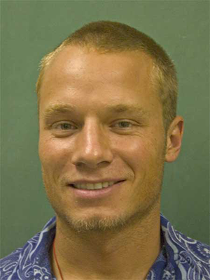

Austin Anderson
I am a mathematician, teacher, and autoformalization and automated theorem proving researcher.

Research Interests
complex analysis; deep learning; ML systems; formal mathematics.
Contact
E-mail: austina[at]hawaii.edu
Selected Works
- paper1
A A, et al
Preprint, 2023. journal, 2024.
Paper: arXiv - paper2 Mathematics.
A A, et al
Preprint, 2023.
Paper: arXiv
Jeremy Avigad created this website template, which I copied from the page of Zhangir Azerbayev, whom I don't know but admire.